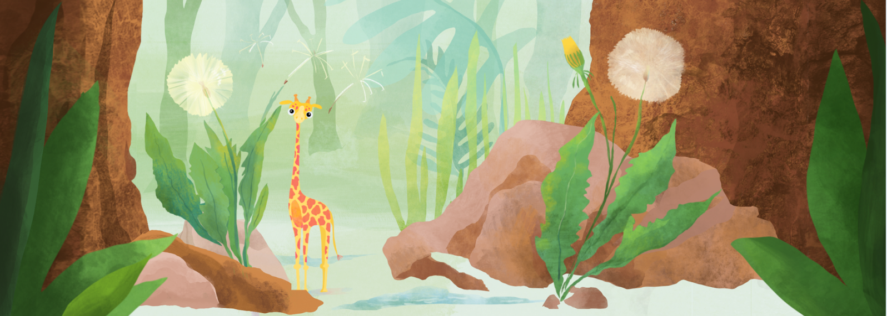

Welcome to the Wonderful World of
TEACUPS, GIRAFFES, & STATISTICS
Learning statistics and R coding
Modules that teach in an intuitive, playful, and approachable way.
For anyone
who wants to learn more about analyzing data, coding, or small cute animals.
Created using